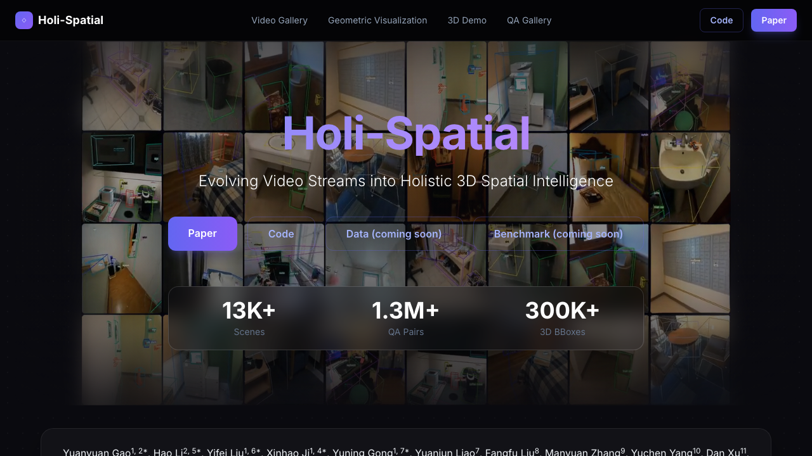
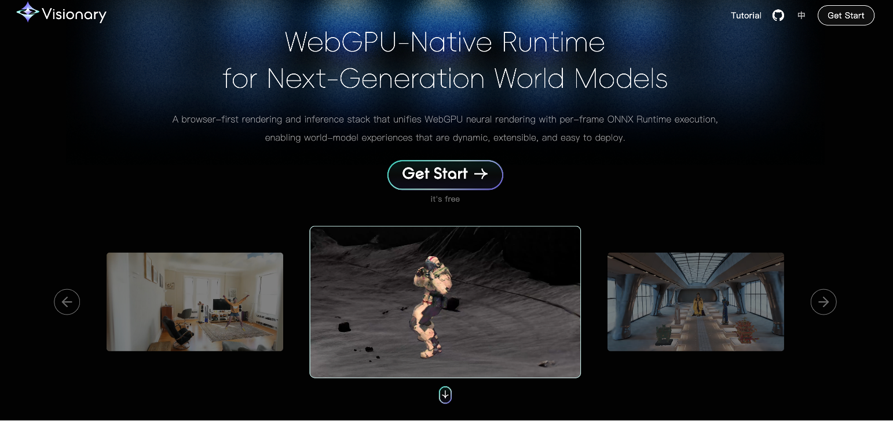
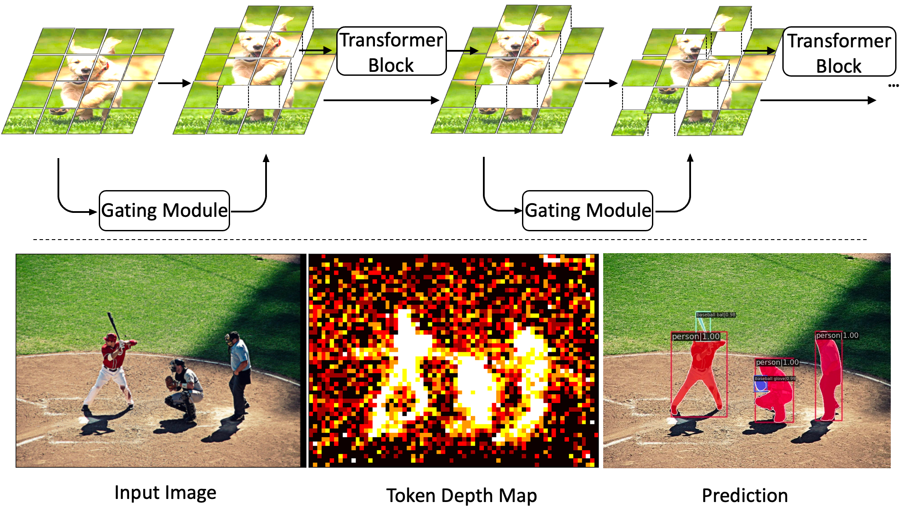

Yifei Liu

Hey! I am a second-year Ph.D. candidate at BUAA and Shanghai AI Lab cosupervised by Prof. Yu Qiao, Xiao Sun and Zhihang Zhong. Previously, I was a research assistant at ETH, a graduate researcher at Robotics and Perception Group led by Prof. Davide Scaramuzza, and an undergraduate student at USTC.
I am broadly interested in computer vision, (visual) language models and sparse algorithms.
Feel free to contact me if you are interested in my research and want to collaborate! My current exploration is on agentic RL for spatial tasks.
news
| 2026 | 1 paper accepted by ICML 2026 as Oral. |
|---|---|
| 2026 | 1 paper accepted by CVPR 2026 as Oral. |
| 2025 | 1 paper accepted by CVPR 2025. |
| 2024 | Best paper award on ECCV 2024 workshop. |
| 2024 | 1 paper accepted by WACV 2024. |
| 2023 | Graduated with a GPA of 5.9/6.0, ranked 1st out of 180. |
Research Skill Radar
Publications
|  | Yuanyuan Gao*, Hao Li*, Yifei Liu*, Xinhao Ji*, Yuning Gong*, Yuanjun Liao, Fangfu Liu, Manyuan Zhang, Yuchen Yang, Dan Xu, ..., Xiao Sun, Dingwen Zhang, Zhihang Zhong ICML 2026 Oral Evolving video streams into holistic 3D spatial intelligence with large-scale 3D scene assets and QA pairs. |
 | Yuanyuan Gao, Yuning Gong, Yifei Liu, Li Jingfeng, Dingwen Zhang, Yanci Zhang, Dan Xu, Xiao Sun, Zhihang Zhong CVPR 2026 Oral, Best Paper Award Candidate Unified occlusion priors for structured 3D Gaussian splatting with faster rendering in large occluded scenes. |
|  | Yuning Gong, Yifei Liu, Yifan Zhan, Muyao Niu, Xueying Li, ..., Xiao Sun, Zhihang Zhong arXiv 2025 A web-native WebGPU platform for real-time Gaussian Splatting, mesh rendering, and per-frame ONNX inference. |
  3DGS [Kerbl 2023] PSNR: 31.54 # GS (M): 1.75 FPS: 195.1 Ours PSNR: 31.54 # GS (M): 0.51 FPS: 435.0 | Yifei Liu, Zhihang Zhong, Yifan Zhan, Sheng Xu, Xiao Sun CVPR 2025 Adaptive probabilistic masking for pruning 3D Gaussians while preserving rendering quality. |
|  | Yifei Liu, Mathias Gehrig, Nico Messikommer, Marco Cannici, Davide Scaramuzza WACV 2024 Pruning tokens for Vision Transformers to accelerate inference speed on dense tasks. |


Highlighted Courses
Computer Vision
6.0/6.0
Taught by Marc Pollefeys
Autonomous Mobile Robots
6.0/6.0
Taught by Roland Siegwart and Marco Hutter
Probabilistic Artificial Intelligence
6.0/6.0
Taught by Andreas Krause
Vision Algorithms for Mobile Robotics
6.0/6.0
Taught by Davide Scaramuzza
Advanced Techniques of Machine Translation
6.0/6.0
Taught by Rico Sennrich
who invented tokenizer for ChatGPT.
Planning and Decision Making for Autonomous Robots
5.75/6.0
Taught by Emilio Frazzoli